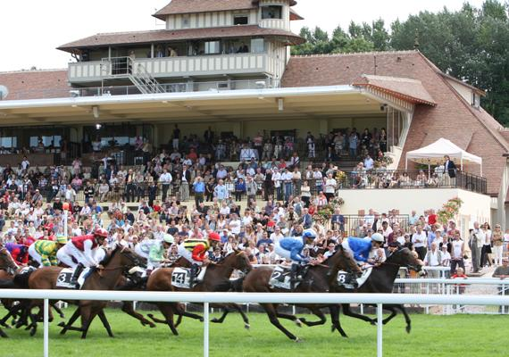
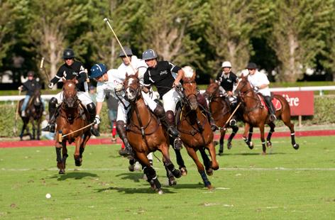
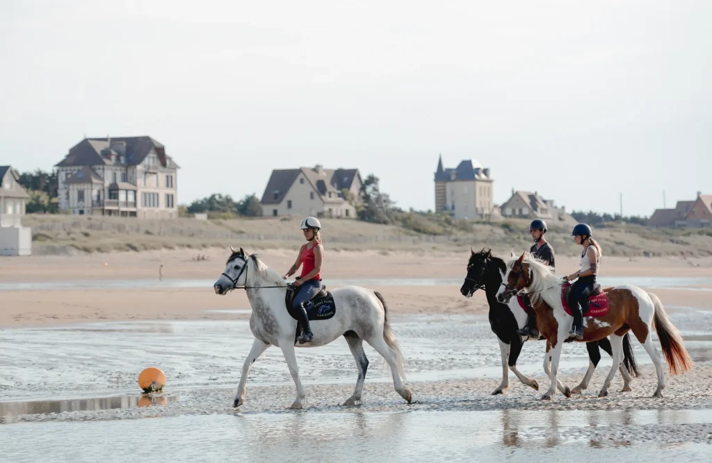

À découvrir

Grands rendez-vous équestres

Baptême de sulky

Le cheval fait partie de l’identité de la Côte Fleurie. Entre hippodromes, grands rendez-vous équestres et expériences à vivre, le territoire offre de nombreuses façons de découvrir l’univers hippique, emblématique de la Normandie.


